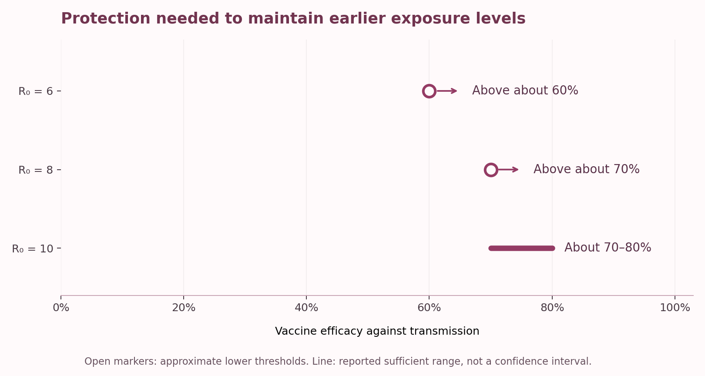

A ticket home, a vaccine, and one more question
Think about what an international trip can mean during university: starting a semester overseas, visiting family, or finally returning home. During the pandemic, those ordinary plans became tied to a much bigger question: how could borders reopen without bringing new outbreaks into the community?
For places trying to keep COVID-19 transmission very low, quarantine helped manage that risk. But a long stay in a managed facility also made travel harder and more costly. Vaccination raised the possibility of easing those restrictions. Then Delta, a more transmissible variant, complicated the picture.
That is the problem behind the study by Zachreson and colleagues (Zachreson et al. 2022). The study asks two questions:
- Question 1: Could vaccination keep a quarantine system’s risk at earlier levels, even against a more transmissible variant?
- Question 2: If an infection still escaped quarantine, what would stop it becoming an outbreak?
Each question matches a line of defence: keeping infection inside quarantine, and limiting its spread if it escapes.
The study’s message is straightforward: vaccination at the border helps, but protection also needs to extend beyond it. To see why, we need to follow an infection through two lines of defence.
Following the infection: from quarantine to the community
Where the evidence comes from: Zachreson and colleagues (2022) built two linked computer simulations using published research on COVID-19, testing and vaccine performance, and compared their baseline results with reported Australian quarantine breaches. This is a modelling study, not a trial or a survey.
The researchers used these simulations to explore situations that would be difficult to study through real outbreaks alone. Their first model represented a quarantine facility with 100 travellers and 20 workers. Travellers stayed for at least 14 days, with testing and isolation procedures intended to catch infections before release.
Even with those measures, an infectious traveller or worker could have contact with the community. The researchers called this a breach. Their second model explored whether the resulting transmission would die out or grow into an outbreak.
The small number of observed breaches limited how precisely the model could match real events. Its main value is showing how risk changes when the researchers alter the conditions.
Vaccination coverage is how many people are vaccinated. If 80 out of 100 people are vaccinated, coverage is 80%.
Vaccine efficacy against transmission is how strongly vaccination lowers the chance that an infection takes hold and spreads. In the study’s main scenarios it works by preventing infection.
A high value for one does not guarantee a high value for the other. These results also concern transmission, not protection against severe illness.
First line of defence: keeping infections inside quarantine (Question 1)
To explore the first stage, the researchers needed a way to describe how readily the virus spreads. They used the basic reproductive number, written as \(R_0\). It is the average number of people one infected person would infect in a fully susceptible population without control measures. A higher value means greater transmission potential; it does not describe how many people would actually be infected inside a controlled quarantine facility.
The study compared vaccination scenarios with an earlier-virus baseline: \(R_0=3\) and no vaccination. In the vaccination scenarios, both travellers and workers were vaccinated. The question was how strong vaccine protection would need to be to keep the infection pressure reaching the community at that baseline level.
Figure 1 shows three comparisons reported by the authors. At \(R_0=6\), vaccine efficacy needed to exceed about 60%. At \(R_0=8\), it needed to exceed about 70%. Even at \(R_0=10\), efficacy of roughly 70–80% was sufficient under the model assumptions, showing the requirement levelling off.

The practical meaning is that a more transmissible virus can use up some of the protection gained through vaccination. Simply knowing that everyone in quarantine is vaccinated does not tell us whether the system performs as well as it did before.
There is another condition behind these findings: the facility had strong infection-control measures. Travellers were placed in small groups, and contact between groups and workers was substantially reduced. The thresholds therefore describe vaccination working alongside quarantine controls.
Back to Question 1: Vaccination can maintain earlier exposure levels if efficacy is high enough for the virus’s transmissibility and the quarantine controls hold.
Those measures address infection escaping. But an escape is only the beginning of the second question: what happens when that infection reaches other people?
Second line of defence: limiting spread after a breach (Question 2)
A breach does not automatically become an outbreak. Transmission may stop after a few infections, or it may keep spreading. To examine this stage, the researchers varied vaccination coverage in the wider community as well as vaccine efficacy.
They compared the time until the cumulative probability of at least one outbreak reached 50%. Here, an outbreak means five or more cases. A longer time means the model takes longer to reach that probability threshold; it is not a promise that an outbreak will occur on a particular day.
When vaccine efficacy against transmission was below 60%, even high coverage produced only modest improvements in this timing measure. With efficacy of at least 80%, however, the measure rose rapidly once community coverage exceeded approximately 80%.
Under selected conditions combining high efficacy and high coverage, it rose from a baseline of roughly 15 days to the order of 1,000 days. That is a large difference between model scenarios, but it depends on fixed assumptions about arrival numbers and how many arrivals are infected. It cannot be treated as a forecast for a particular city.
This brings us back to the two percentages: coverage matters, but so does how well vaccination blocks transmission. Table 1 summarises what that means at each stage.
| Stage | What the model found | What it means |
|---|---|---|
| The virus is more transmissible | Efficacy had to exceed about 60% at \(R_0=6\) and about 70% at \(R_0=8\) to match baseline exposure. | Vaccination alone does not guarantee earlier risk levels. |
| An infection escapes; community protection is weak | Below 60% efficacy, even high coverage modestly improved outbreak timing. | Coverage alone does not describe protection. |
| An infection escapes; protection is strong and widespread | At 80% efficacy or more, outbreak timing rose rapidly beyond about 80% coverage. | Strong, widespread protection can substantially delay the model’s outbreak-probability threshold. |
| Quarantine controls weaken | Breach-related risk rose sharply with weaker controls. | Vaccination needs support from testing, isolation and reduced contact. |
Back to Question 2: Strong protection shared widely across the community can substantially delay the point at which outbreak probability reaches 50%. Below 60% efficacy, higher coverage produced only modest improvements in this measure.
A useful model, with limits
Before taking these findings further, we need to look at what the simulations assumed. Community vaccination coverage stayed fixed within each scenario, immunity did not wane, and initial immunity from previous infection was negligible. In the main analysis, vaccination reduced the chance of becoming infected; people who became infected despite vaccination were assumed to be just as contagious as unvaccinated infected people.
Changing assumptions about vaccine protection changed the numerical results in the authors’ sensitivity analyses. This is why the percentages above are conditional findings, rather than universal thresholds for reopening borders.
The historical setting matters too. The paper examines Delta-era quarantine conditions. It helps explain the relationship between border protection and community protection at that time; it does not directly describe current variants or vaccination programmes.
What should we take away?
We began with two questions: could vaccination keep quarantine risk at earlier levels, and what happens when an infection still escapes? The first depends on protection relative to transmissibility: efficacy had to exceed about 60% at \(R_0=6\) and about 70% at \(R_0=8\), with roughly 70–80% sufficient at \(R_0=10\) (Figure 1). The second depends on community protection: below 60% efficacy, high coverage produced modest timing improvements; at efficacy of at least 80%, the improvement became pronounced beyond approximately 80% coverage. In selected high-efficacy, high-coverage scenarios, the time to a 50% cumulative outbreak probability rose from about 15 days to the order of 1,000 days (Table 1). These are conditional model comparisons, not forecasts (Zachreson et al. 2022).
For a student reading a headline about vaccination or border safety, the useful habit is to ask three things: how many people are protected, how strong is that protection against transmission, and what other measures are in place? Together, those questions tell us more than any single vaccination percentage.